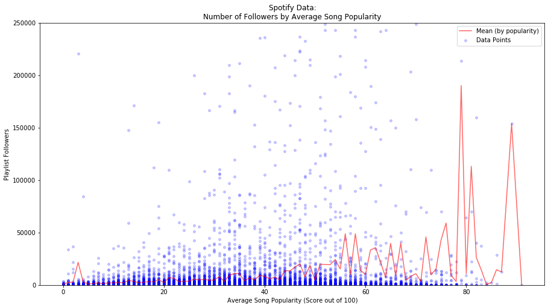
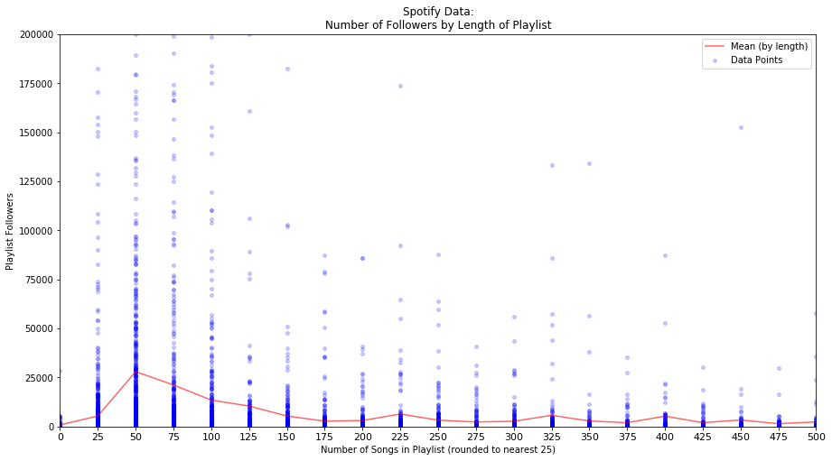
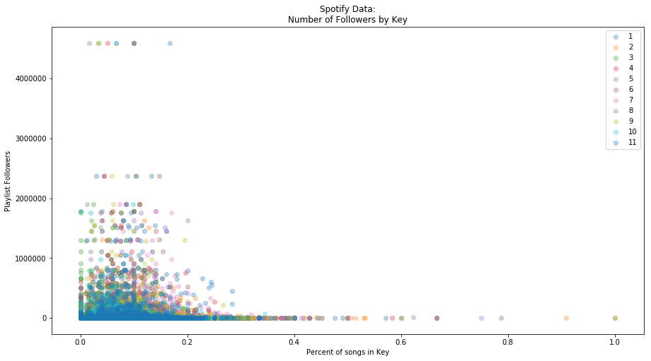
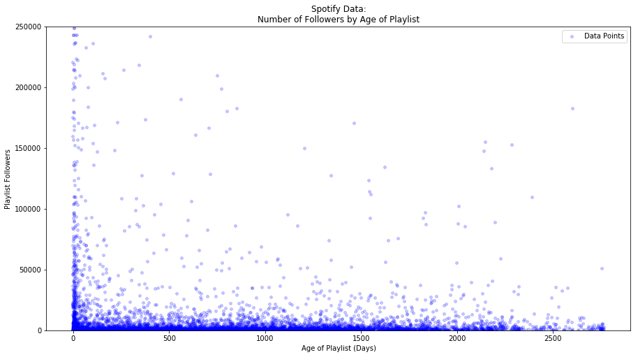
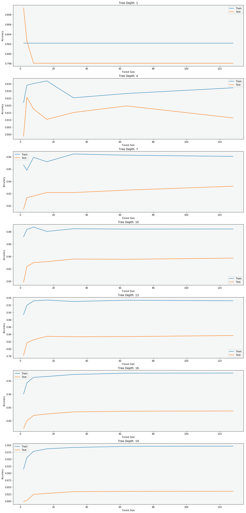

NOTEBOOKS:
SPOTIFY DATA | MSD DATA | EDA, MODEL, & RESULTS
MOTIVATION
Our goal was to come up with a model for generating playlists that will maximize the likelihood of obtaining a significant number of followers for the most common user-specified genres or search filters.
Our final deliverable to Spotify is an algorithm that generates a playlist based on user-suggested genre that is most likely to be highly successful. Candidate playlists are based on artist genre; we did not have data on song-specific genre.
DATA
Our initial data was obtained by requesting playlist information through the Spotify API, which provided information about artist and song popularities, as well as additional track characteristics, including tempo, key, and loudness. We investigated other potential predictors from the Million Songs Database developed by LabROSA at Columbia University, using the song title and album (this dataset unfortunately was missing ISRC). We did not take many features from this MSD dataset. This is partially because we did not think that too many of them would be useful (the majority of predictors provided by MSD were identical to those provided by Spotify) and also because extracting certain variables was inefficient and impossible under the given time constraints. Additionally, because MSD does not include a universal identifier such as IRSC, there was not a huge percentage of songs that actually merged to our Spotify data. The Spotify data seemed sufficient to make an adequate model though. This is more or less what the data looked like:
| followers | pl_length | pl_name | track_album_name | track_name | track_populatrity | track_acousticness | track_danceability | track_energy | track_key | |
|---|---|---|---|---|---|---|---|---|---|---|
| 1559039 | 4594125 | 60 | mint | Off The Deep End Volume One | Ghost | 60 | 0.101000 | 0.530 | 0.634 | 5.0 |
| 893872 | 4594125 | 60 | mint | Without You (Remixes) | Without You - Otto Knows Remix | 51 | 0.000738 | 0.531 | 0.850 | 2.0 |
| 334899 | 4594125 | 60 | mint | Message In A Bottle | Message In A Bottle | 52 | 0.015700 | 0.543 | 0.939 | 1.0 |
| 65251 | 4594125 | 60 | mint | Almost Home | Almost Home | 63 | 0.037600 | 0.780 | 0.722 | 0.0 |
| 1198752 | 4594125 | 60 | mint | Nobody Compares To You | Nobody Compares To You | 71 | 0.229000 | 0.596 | 0.731 | 2.0 |
Each row is a song. This table shows some of the fields that we had in our dataset. We collapsed the songs into their respective playlists in our to build our model and make our predictions.
Part of Spotify’s edge in the competitive streaming-audio industry (as it quickly expands into other verticals such as video-streams and recording) is the ease-of-use of its platform: music is curated and presented to minimize effort needed to find tracks you like. The Discover Weekly playlist, for example, is a translation of a user’s hebdomadal listening history into a new set of tracks delivered to him or her each Monday. Developing a product that responds accurately to a user’s request is paramount to continued growth and success of the platform. It also helps innovators in the music industry understand how users react to a specific implementation of a curative algorithm.
There are two main obstacles to solving this problem, the latter much more abstract than the former. First, we needed to determine which predictors of the Spotify-generated data were most important in determining how many followers a playlist would accumulate. Our analysis of this took a potentially dangerous amount of our time and effort, as it resulted in a number of time-intensive attempts. Second, we needed to find a way to understand user-specified input to build a playlist that matched the request: parsing out genres attributed to each track, understanding which song characteristics perform better by genre, and ensuring overall playlist coherence/consistency.
Here are some examples of our EDA:     MODELING Our baseline models are two linear regressions, one featuring all predictors and the other using a Lasso feature reduction method. However, we quickly realized that our model had very little predictive power. Instead, we decided to continue by trying to classify playlists as either successful or not successful. This seemed like a good approach because we can now give decent predictions about whether or not a playlist will be popular or not instead of giving estimates of followers with huge errors. We began by creating a threshold of success for a playlist in terms of the number of followers. We set this threshold so that it would place a playlist in the top 20% most popular on Spotify (of the playlists we got from the API). With this threshold we then implemented a random forest classifier that returned a probability of the playlist hitting this threshold of followers. In other words we are generating a probability that the playlist is successful, and we use that probability to select which playlist to suggest to Spotify and/or the user.  RESULTS, CONCLUSIONS, & FUTURE WORK Our results for Spotify are the playlists that we recommend for each genre. Here is an example of the playlist that we generated for the genre “Pop:” We put this together by randomly selecting indie songs and putting them into playlists. We only kept the playlist with the highest probability of success. There are a couple of downsides with our current system. First, it uses artist genre and there are often many genres associated with each artist. This might not give a great representation of the desired genre. Second, this model still has a hard time classifying anything as success. After hundreds of iterations, the most likely success only had about 70% chance of success. While this is much better than most playlists will do (remember, only 20% of the original playlists are classified as success), this is still probably not as strong as we would like. We think that this model would likely become stronger with more predictors or a larger subset of playlists. For predicting followers, there are likely many complex features that include what becomes a success, including how they show up in Spotify’s search results (though causality could go in both directions). Future work would involve getting many more features and building a stronger model. However, we think our basic framework is a good way to attack the problem and believe that we could provide useful feedback to Spotify given the time to build out a stronger classifier.
track_name
track_album_name
track_artists_name1
track_artists_name2
23803
She Dont Know
Cream
Meek Mill
Ty Dolla $ign
29007
Stay
Stay
Kygo
Maty Noyes
36070
Diana
The Very Best Of Paul Anka
Paul Anka
NaN
41470
Good Love
Universal Love
Sons Of Zion
NaN
56672
Never Say Never
The Fray
The Fray
NaN
103612
Belgie ... (Is Er Leven Op Pluto ...)
De Allerbeste Hollandse Meezingers
Het Goede Doel
NaN
159250
Get Up
Get Up
R3HAB
Ciara
183490
Wanna Be Startin' Somethin'
Michael Jackson's This Is It
Michael Jackson
NaN
216450
All About Tonight - Acoustic
All About Tonight
Pixie Lott
NaN
247731
Back for Good - Radio Mix
Never Forget - The Ultimate Collection
Take That
NaN
248931
What I Like About You
What I Like About You (And Other Romantic Hits)
The Romantics
NaN
249614
Summer Son
The Greatest Hits
Texas
NaN
299907
My Girl
Motown: The Complete No. 1's
The Temptations
NaN
303672
El Calendario
El Calendario
Ezio Oliva
NaN
321637
Losing Touch
Losing Touch
Albert Hammond, Jr.
NaN
323527
What's Luv? (feat. Ja-Rule & Ashanti) - Featur...
Jealous Ones Still Envy (J.O.S.E)
Fat Joe
Ja Rule
346817
Huppes Taiauts 1935
Cajun Roots
Jo-El Sonnier
NaN
347462
If It Ain't Love
If It Ain't Love
Jason Derulo
NaN
376185
Streets of Philadelphia
The Essential Bruce Springsteen
Bruce Springsteen
NaN
381587
Romantic
The Preview
Stanaj
NaN
428546
Conquer The World - Bonus Track
Fuerteventura
Russian Red
NaN
443319
Ride
Blurryface
Twenty One Pilots
NaN
457208
Lemon to a Knife Fight
Lemon to a Knife Fight
The Wombats
NaN
463190
The World
Time Well Wasted
Brad Paisley
NaN
486809
Round And Round
Night Visions (Deluxe)
Imagine Dragons
NaN
527183
XPlicit
EPIC LIT
French Montana
Miguel
557760
Ain't No Mountain High Enough - Stereo Version
Marvin Gaye '50' (International Version)
Marvin Gaye
Tammi Terrell
667104
Ik Proost Met Jou
Ik Proost Met Jou
Gerard Joling
NaN
680309
Then Again
Cardinal
Pinegrove
NaN
697647
Hands Clean
The String Quartet Tribute To Alanis Morissett...
Vitamin String Quartet
NaN
721805
Moonlight
Moonlight
Grace VanderWaal
NaN
748776
Bonfire
Camp
Childish Gambino
NaN
771819
Mirrors
Mirrors
Justin Timberlake
NaN
788463
Down
Down
Fifth Harmony
Gucci Mane
862070
Gives You Hell
When The World Comes Down (International Version)
The All-American Rejects
NaN
933698
Swish Swish
Swish Swish
Katy Perry
Nicki Minaj
967694
Let It Go
VSQ Performs the Hits of 2016 Vol. 2
Vitamin String Quartet
NaN
969391
Stars Will Lead The Way - Live
Live: Big Music Tour 2015
Simple Minds
NaN
969438
Killing Andy Warhol - 2002 Digital Remaster
Neapolis (USA ONLY)(Special Packaging)
Simple Minds
NaN
1012351
Change
4 Your Eyez Only
J. Cole
NaN
1074512
Legend
Swings
Ryan Caraveo
NaN